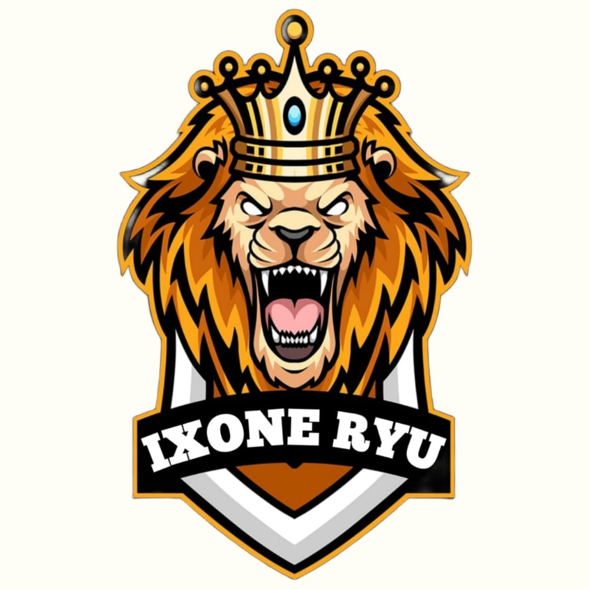

Kami adalah tim Free Fire yang berkomitmen untuk meraih prestasi tertinggi dalam kompetisi Free Fire. Dengan keahlian dan kerja sama tim yang solid, kami siap menghadapi tantangan apapun!
Visi kami adalah menjadi tim esports Free Fire terdepan yang diakui secara internasional. Misi kami adalah:
Tim Ixone Ryu berkomitmen untuk: